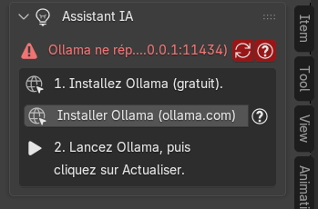
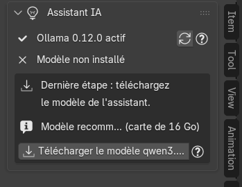
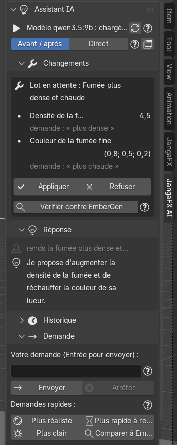

The AI assistant
The JangaFX AI tab of the sidebar (N key) contains an assistant that understands your requests in plain language, for example "make the smoke denser", and proposes the matching changes. It runs on your computer thanks to the free Ollama program: nothing is sent over the Internet. The add-on works very well without it.
You need a graphics card with at least 8 GB of memory.
Install Ollama and the model
The tab guides you step by step. As long as Ollama does not respond, it shows:
- Install Ollama (free): the Install Ollama (ollama.com) button opens the official download page (https://ollama.com/download) in your browser. The add-on installs nothing itself: download and install Ollama like any ordinary program.
- Start Ollama, then click Refresh (the arrows button to the right of the status line).


When Ollama responds, the line says "Ollama … active". Last step: download the assistant's model with the Download model … button. The recommended model depends on your graphics card's memory. The download is several GB and only happens once; Blender stays usable meanwhile, a bar shows progress and Cancel download stops it.


The status line then tells you whether the model is loaded (with the graphics memory it occupies) or unloaded (installed but not in memory). The model is always unloaded before a render, a check or an Auto Match, to free the graphics card.
The two modes
Under the status line, choose how the assistant applies its changes:
- Before / after (default): the assistant prepares its changes without touching the scene. You see the list of changes, and a before / after render next to the EmberGen reference, then you apply or reject.
- Direct: changes are applied immediately; Undo (or Ctrl+Z) removes them.
The small window button at the end of the line opens the conversation in large view (see below).
Ask a question
In the Request part:
- type your request in the Your request field (for example "make the smoke denser and hotter");
- press Enter or click Send.
Stop interrupts the response in progress (and the check or Auto Match it is waiting for).
The quick requests send a ready-made sentence, as if you had typed it: More realistic, Faster to render, Brighter, Compare to EmberGen (runs a check and says what differs most).
The Reply part shows your last question (in grey) and the assistant's reply; History keeps the previous exchanges.
Apply, reject, undo
Each proposal arrives in the Changes part, as a batch: one line per setting, with the old and new value, and in small print the source of the value (your request, or a tool's measurement).


In Before / after mode:
- See before / after opens the image (before | after | EmberGen reference) in a window, when the preview is ready;
- Apply writes the changes into the scene (you can undo it);
- Reject abandons them: nothing was touched;
- Check against EmberGen runs a check on this batch in a background Blender (several minutes on a large project) and says whether the batch moves the render away from EmberGen. Nothing is undone automatically: you decide.
After applying:
- Undo restores the values from before the last applied batch (settings, preset and added objects); Blender's Ctrl+Z works too;
- Revert to this state, on an older batch, returns to the state that batch left.
In the Tools part:
- Clear AI settings removes everything the assistant changed on the active import (undoable);
- Clear conversation empties the message history; settings already applied stay.
Open in large view
Open large (History or Tools part, or the window button at the top) opens a large window with the whole conversation, read-only. Its sidebar (N key, JangaFX AI tab) keeps the changes and the request field. If the window is already open, it is only updated. When a reply is too long for the panel, the … see all link also opens this window.
Assistant settings
In Edit > Preferences > Add-ons > JangaFX Bridge, the AI assistant (Ollama) block shows Ollama's status and the model download, plus three settings:
- Forced model: the Ollama model to use (for example
qwen3.5:4b). Empty: automatic choice among the installed models, according to the free graphics memory. - Keep model loaded (min): minutes during which Ollama keeps the model in memory after the last message (0: unloaded straight away).
- Ollama server: server address (default
http://127.0.0.1:11434). Change nothing if Ollama runs on this computer with its default settings.
If the tab shows "AI assistant unavailable (see Blender's console)", the assistant could not load; the rest of the add-on works normally.